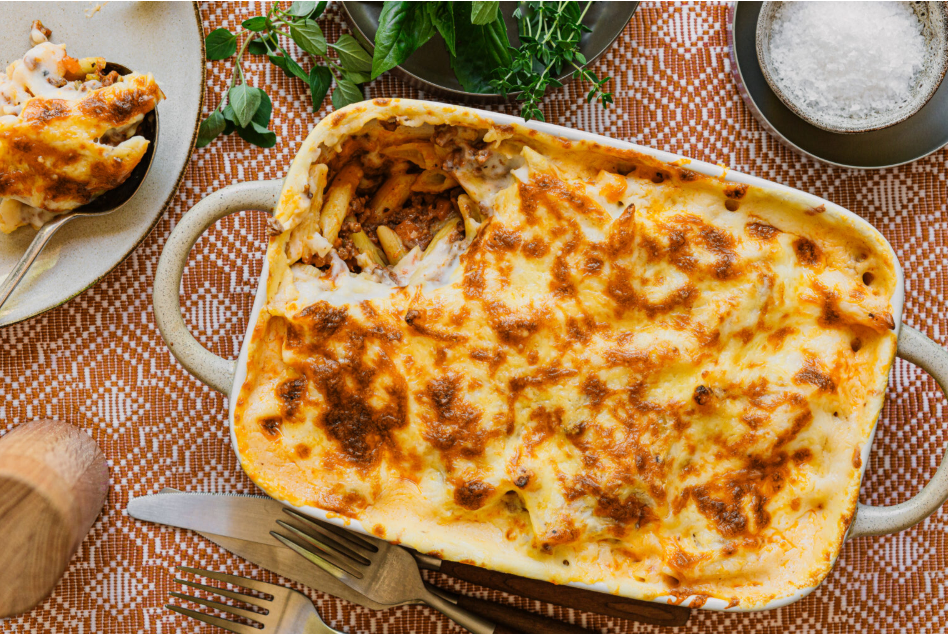

Recipe Instructions
1 - Macarona Bechamel
Macarona Bechamel is a popular Egyptian baked pasta dish made with layers of pasta,
rich meat sauce, creamy béchamel sauce, and melted mozzarella cheese.

Ingredients
Meat Sauce
- 500 g minced beef
- 1 onion
- 3 cloves garlic, finely minced
- 1 tsp salt
- ½ tsp black pepper
- ½ cup tomato paste
- 2–3 cups water
Bechamel Sauce
- 5 tbsp butter
- 5 tbsp all-purpose flour
- 5–6 cups whole milk
- 4 tsp salt
- ½ tsp white pepper powder
Pasta
- 600 g penne pasta
- 2 tsp salt
- 2 cups mozzarella cheese
Cooking Instructions
- Boil the pasta in salted water until it is almost cooked, then drain it.
- In a pan, cook the chopped onion and garlic until soft.
- Add the minced beef and cook until browned.
- Add tomato paste, salt, pepper, and water. Let it simmer for 10 minutes.
- In another pot, melt the butter and add flour while stirring.
- Gradually add the milk while stirring to make the béchamel sauce.
- Add salt and white pepper to the béchamel and cook until thick.
- In a baking dish, add a layer of pasta, then meat sauce, then béchamel.
- Repeat the layers and finish with béchamel and mozzarella cheese on top.
- Bake in a preheated oven at 180°C for about 30 minutes until golden.
Enjoy your delicious Macarona Bechamel!
if your are still having trouble you can refer to this video